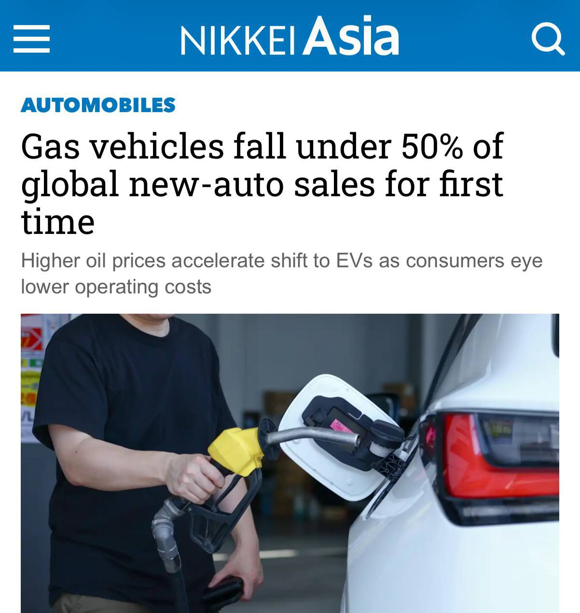

Тачки и Точка
@tachki
Тачки и Точка
@tachki
Продажи бензиновых машин впервые за всю историю упали ниже 50 мирового авторынка.

Продажи бензиновых машин впервые за всю историю упали ниже 50% мирового авторынка.
За первое полугодие 2026-го продали 20,2 миллиона машин с бензиновым мотором — на 10% меньше, чем годом ранее. Для сравнения: в 2021 году их доля доходила до 73%.
А вот в России, даже не несмотря на топливный кризис, в августе 95% новых машин были бензиновыми, а электромобилей продали всего 2272.
🚙 Тачки и Точка
За первое полугодие 2026-го продали 20,2 миллиона машин с бензиновым мотором — на 10% меньше, чем годом ранее. Для сравнения: в 2021 году их доля доходила до 73%.
А вот в России, даже не несмотря на топливный кризис, в августе 95% новых машин были бензиновыми, а электромобилей продали всего 2272.
🚙 Тачки и Точка